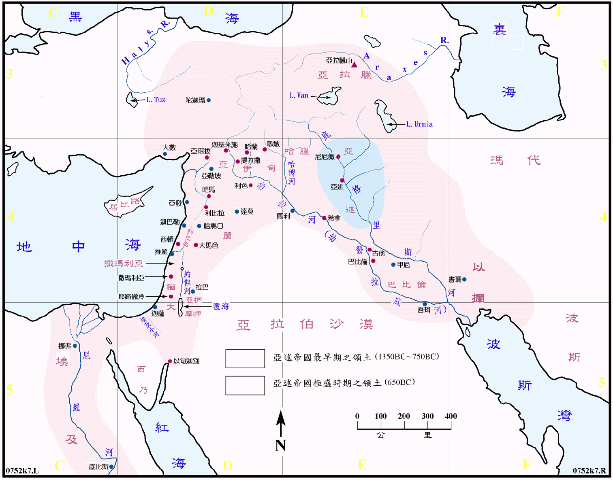

| 圣经 | 说明 |
|---|---|
| 王下15:19 | 以色列王米拿现年间，亚述王普勒来攻击以色列国，米拿现给他一千他连得银子，请普勒帮助他坚立他的国位。於是亚述王就回去了 (740BC 前后)。 |
| 王下15:29 | 以色列王加比年间，亚述王提革拉 列色来夺了以云、亚伯伯玛迦、亚挪、基低斯、夏琐、基列、加利利全地，将这些地方的居民都掳到亚述去了 (734BC)。 |
| 王下16:7 | 亚兰王利汛和以色列王比加上来攻打耶路撒冷，犹大王亚哈斯求亚述王提革拉毗列色，请他去攻打大马色，以解围困，亚述王就攻取了大马色杀了利汛，把居民掳到吉珥 (733BC)。 |
| 王下17:3，王下18:9 | 以色列王何细亚年间 (730BC)，亚述王上来攻击他，何细亚就服事他，给他进贡，后来何细亚背叛，投靠埃及王梭，亚述王知道了，就把他锁禁，囚在监里。亚述王上来攻击以色列遍地，上到撒玛利亚，围困三年才攻取了撒玛利亚 (722BC)，将以色列人掳到亚述，把他们安置在哈腊、歌散的哈博河边，并玛代人的城邑。 |
| 王下18:13，代下32:1，赛36:1 | 犹大王希西家倚靠耶和华，他不肯事奉亚述王，希西家十四年，亚述王西拿基立上来攻打犹大的一切坚固城，将城攻取，希西家差人往拉吉去见亚述王，亚述王罚犹大王银子三十他连得，但亚述王仍从拉吉派大军攻打耶路撒冷 (704BC)。 |
| 王下19:35，代下32:21，赛37:36 | 希西家求告耶和华，当夜耶和华的使者出去，在亚述营中杀了十八万五千人，亚述王西拿基立次日就拔营回去，住在尼尼微，不久被他的两个儿子所杀，他的另一个儿子以撒哈顿接续他作王。 |
| 代上5:6 | 巴力的儿子备拉作流便支派的首领，被亚述王提革拉 尼色掳去。 |
| 代上5:26 | 他们得罪了他们列祖的神，故此，以色列的神激动亚述王普勒，和提革拉毗尼色的心，他们就把流便人、迦得人、玛拿西半支派的人，掳到哈腊、哈博、哈拉与歌散河边。 |
| 代下28:16 | 因为以东人和非利士人攻击犹大，亚哈斯王差人去见亚述诸王，求他们帮助，亚述王提革拉毗列色上来，并没有帮助他，反倒欺凌他。 |
| 代下33:11 | 耶和华警戒玛拿西和他的百姓，他们却是不听，所以耶和华使亚述王的将帅来攻击他们，用铙钩钩住玛拿西，用铜 锁住他，带他到巴比伦去。亚述帝国最初的领土在今日巴格达城以北，底格里斯河的两岸，是一处高原，冬季多雨酷寒，夏则暑热。东北方有大小札布两大支流，故水源充足，农牧皆宜，盛产牛羊马，各样水果和谷物，产量丰富，人属闪族，秉性残暴，纪律严明，精於贸易和战争。根据可靠之考证，亚述地区早在五千年前己有人类活动，在主前三千年代，常受苏美人和巴比伦人之控制，也受其文化之影响。 |
亚述帝国的最初领土在今日巴格达城以北，底格里斯河的两岸，是一处高原，冬季多雨酷寒，夏则暑热。东北方有大小札布两支流，故水源充足，农牧皆宜，盛产牛羊马，各样水果和谷物，产量丰富，人属闪族，秉性残暴，纪律严明，精於贸易和战争。根据可靠之考证，亚述地区早在五千年前已有人类活动，在主前三千年代，常受苏美人和巴比伦人之控制，也受其文化之影响。
亚述自 1360BC 至 1076BC 间曾一度非常强盛，领土东至巴比伦，西方击败赫族，东方进入撒格鲁山区，复又击败亚兰人，拥有大片的国土而成为一个世界强权。约在1075BC 年起衰微了一百五十馀年，此时正是以色列在大卫和所罗门的统治下兴盛之时。自911BC 起亚述再度昌盛了三百馀年，先是占领了两河流域，东方直达以拦，北到乌拉图，西至小亚细亚的基利家，然后再向亚兰进军，撒缦以色三世於853BC，在夸夸一役中未能得胜，数年后卷土重来，才攻克下大马色和撒玛利亚。撒缦以色三世於 827BC 去世后，国势立衰，八十年后，直到普勒王，即是提革拉 列色三世时，(745BC 至727BC) 他重新收复往日的领土，并往外扩张，曾进军到叙利亚和以色列，在722BC 以色列 (北) 国被撒缦以色五世和他的儿子撒珥根二世所灭，将居民掳去。犹大国从此就不断受到亚述的威胁，在714BC，西拿基立王攻克了犹大诸城，南国几乎灭亡，但在围攻耶路撒冷时却大败，犹大国得以续存。671BC，亚述征服埃及，两年后埃及叛，以撒哈顿王再出征，但却死在途中。625BC，巴比伦逐渐兴起，亚述却渐衰弱，到 614BC，巴比伦和玛代联军攻陷了亚述诸城，612BC 又攻破了尼尼微城，亚述残兵退到哈兰地区，埃及曾派兵支援，但仍徒劳无功，亚述帝国就在数年之间全部被巴比伦所灭亡。